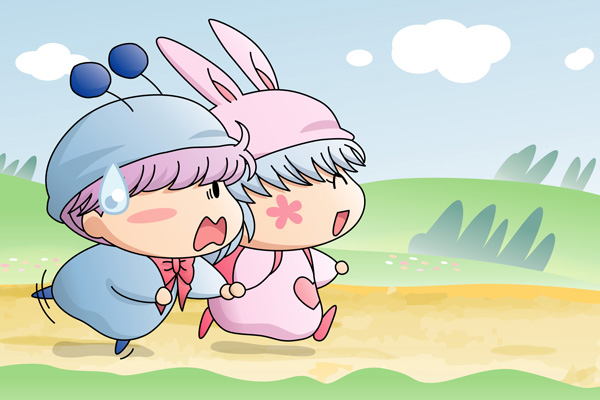

一夜明けて、いよいよデートの日がやってきました。
真っ青な空にぽかぽか陽気という、まさにデート日和な朝。
パピィは待ち合わせ時間よりも少し早く来て、ムルモを待ちます。
しばらくするとムルモが時間通りにやってきました。
パピィ「おはよう！ムルモ！」
さわやかな笑顔でパピィが挨拶します。
それを見てびっくりするムルモ。
ムルモ「お、おはようでしゅ…」
パピィ「もう、どうちたのよ、朝からそんな顔ちて。
今日はとっても楽しい一日になるのよ」
ムルモ「そ、そうでしゅか？
今日のパピィは少しおかしいでしゅね」
パピィ「あたちの言うことが信用できないって言うわけ？」
ムルモ「そうでしゅよ。
だいたいパピィはいつも…」
パピィはいきなりムルモの手を握りました。
ムルモ「ほえぇ？」
パピィ「いいからいいから。
さぁ、早く森へ行きまちょ！」
そう言って、ムルモをぐいぐい引っ張っていきます。
ムルモ「やっぱりおかしいでしゅ！」
パピィ「そう？いつも通りのあたちじゃないの」
ムルモ「うーん…」
最初は疑いの目で見ていたムルモでしたが、次第にパピィの素直さが移っていったのか、やれやれという感じにパピィの横を一緒に歩くのでした。
もちろんこれはパピィの計画です。
お香の煙に映っていた木に囲まれた景色をヒントに、デートの前の日の夜、ベッドの中でパピィはデートの計画を一生懸命考えました。
森へ行ってお花を摘んでお昼を食べてお昼寝してそして・・・。
パピィ「ムルモにはこのお花がぴったりね」
ムルモ「とってもきれいなお花でしゅ。
ボクもパピィに似合うお花を選んでみたでしゅよ」
楽しい時間はとても順調に過ぎていきます。
パピィ「ねぇ、そろそろお昼にしまちょ」
ムルモ「え～、ちょっと早くないでしゅか？」
パピィ「いいのいいの！」
ほとんどストーリーに進展がなくて申し訳ないです(^^;。ちぐはぐな二人をどうしても描きたかったので…。パピィの強引さには散々悩まされたムルモのことだから、今回のようなパピィの突然の誘いにもムルモはきっと用心深いはず(^^)。
(2006/3/27)